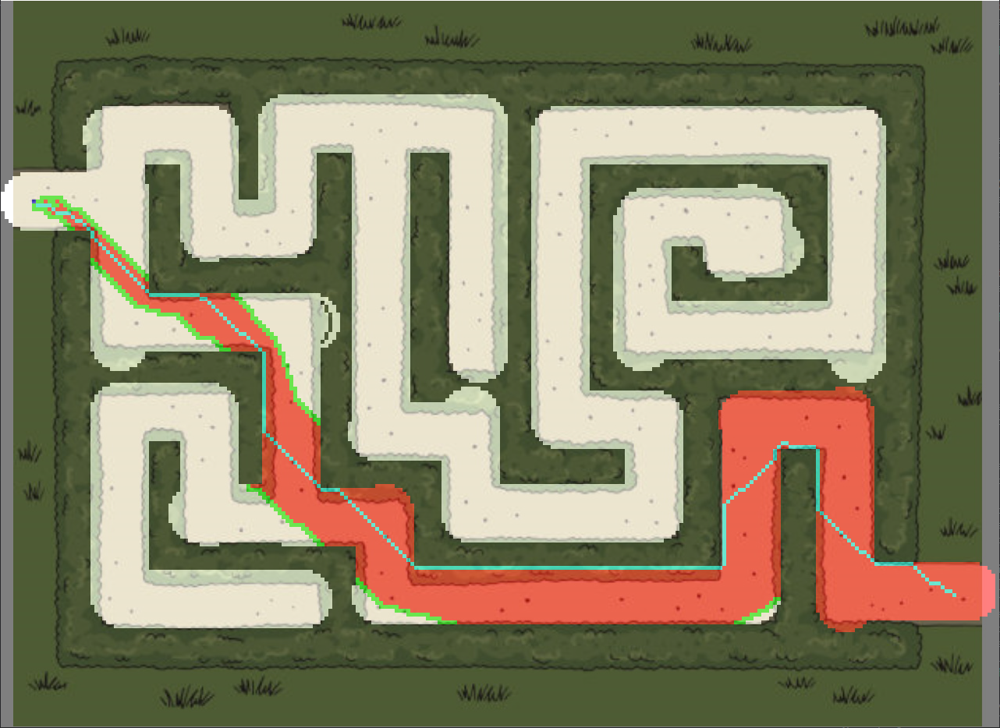
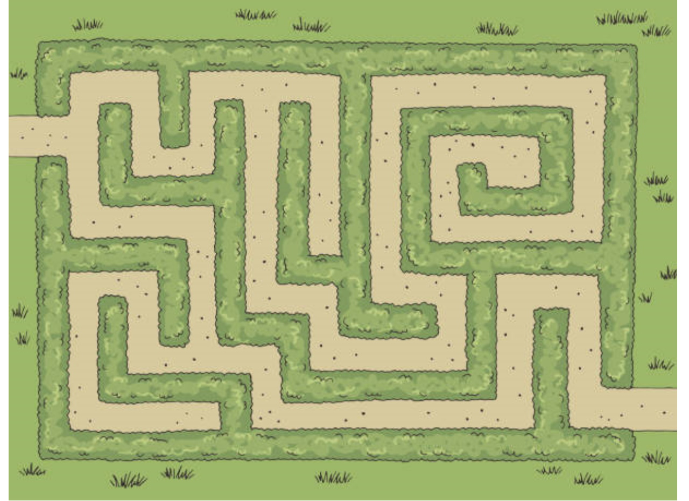
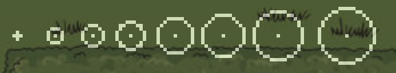
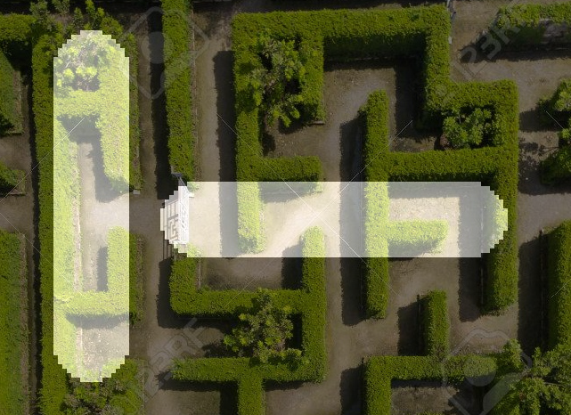
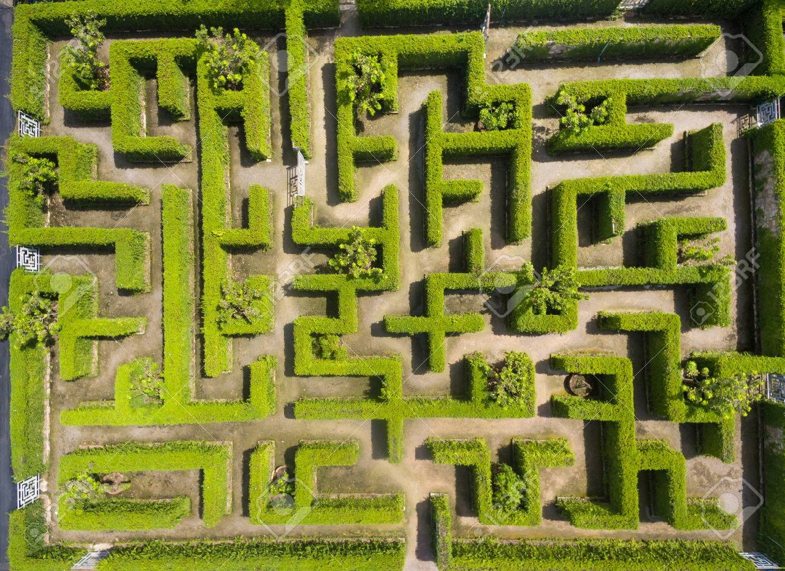
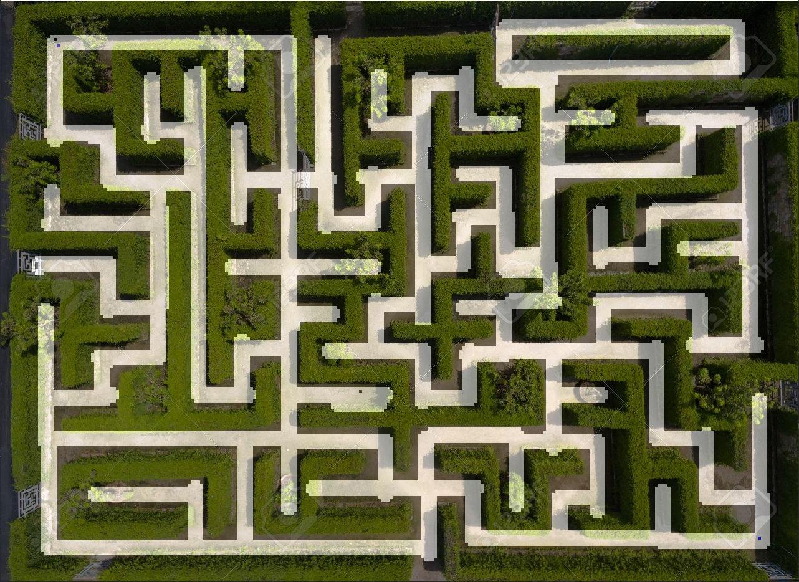
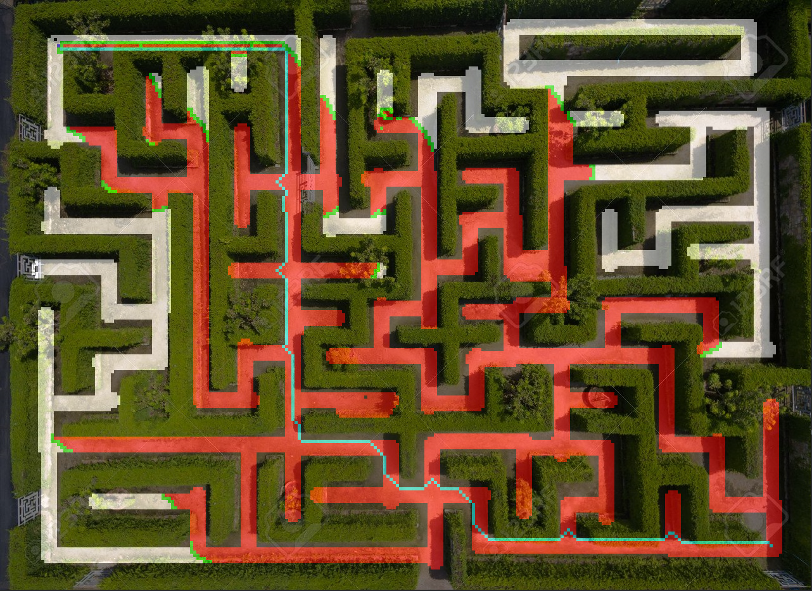

Overview
A simiple A* pathfinding tool with the intention of fitting the path to an image. The user uses the inbuilt drawing tool to carve out a path that follows an image. For example, this graphic of a hedge maze:
Using the basic drawing tools the program provides, I carved out a path on the original jpeg. After placing the start and end nodes, you can begin the pathfinding process. Here is the original image:
The motivation of this was to apply this to any maze or map of a building to find the shortest route through it.
The Brush
With the brush you can either paint a wall or cave out empty space. The brush can also be changed in size to suit your needs.
Honestly, drawing a pixel circle is harder than it looks.
You can also hold shift or ctrl to draw in perfectly straight lines on the x and y axis
After you are finished with a drawing you can save it for later use. This retains the drawing after closing the program. So for example, I can carve out a path for this image:
  The pale blue line through the middle is the shortest path found. (Keep in mind it may not be the shortest path)
Controls
-
1 : Previous state selection
-
2 : Next state selection
-
+ : Increase brush radius
-
- : Decrease bursh radius
-
3 : Print cell f,g,h values
-
Right key : Increment step of pathfinding by 1
-
Left key : Peform pathfinding algorithm
-
Down key : Move down a floor
-
Up key : Move up a floor
-
Shift : Snap to y axis
-
Ctrl key : Snap to x axis
-
s : Save drawing. This loads every time the floor is changed or the program is reset
-
r : Reset drawing
-
e : Place end node. Must be placed before start node
-
q : Place start node. Must be placed after end node